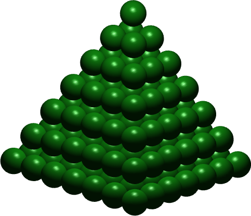

Checkpoint 1
- Write a method that uses a divide-and-conquer strategy to find the maximum value in an integer array. The maximum value of a one-element array is that element. The maximum of any other array is the maximum of the left half, or the maximum of the right half, whichever is larger. (You can use
ArraySumas a starting point.)
- How many balls are in this pyramid?

Each level in the pyramid is a square, so if there are n levels, the bottom level has n * n balls, and the total number of balls is just(n * n) + (number of balls in a pyramid of height n - 1).
There is just one ball in a pyramid of height 1. Write a static recursive method
getPyramidCountthat takes a singleintargument representing the number of levels in a pyramid, and returns the total number of balls.